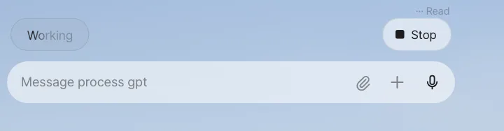
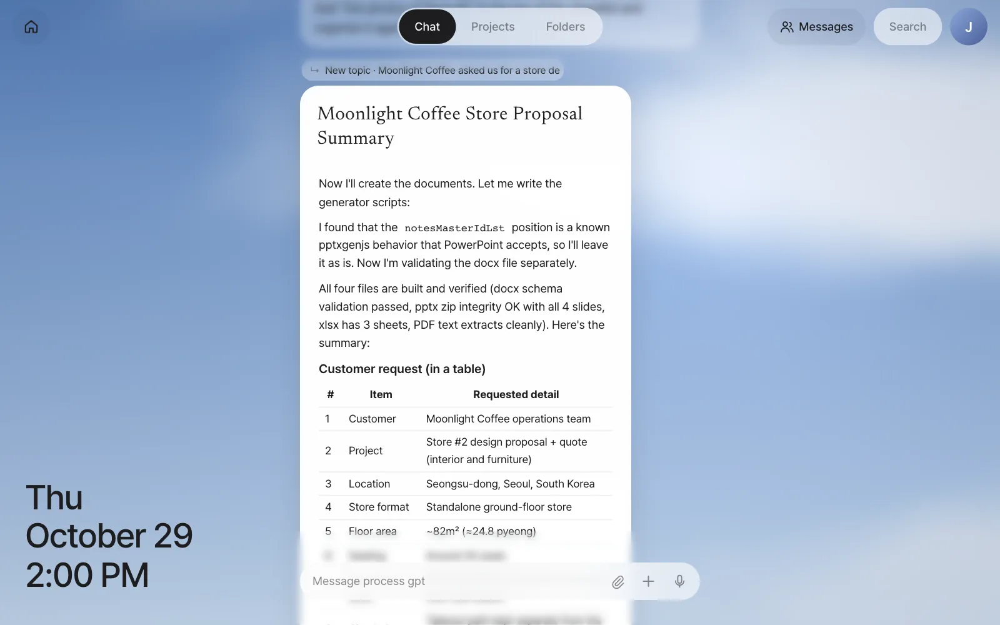
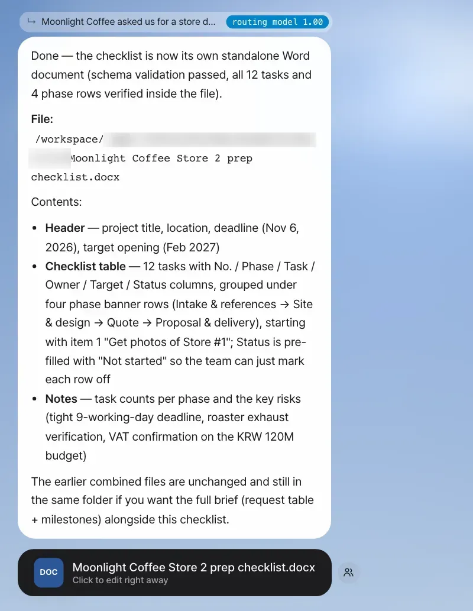
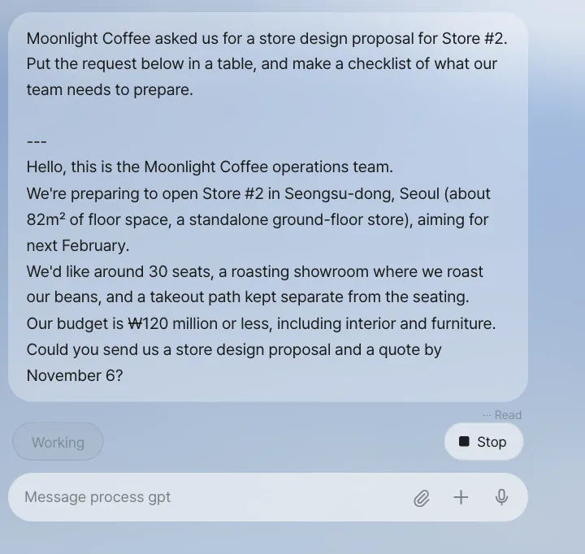
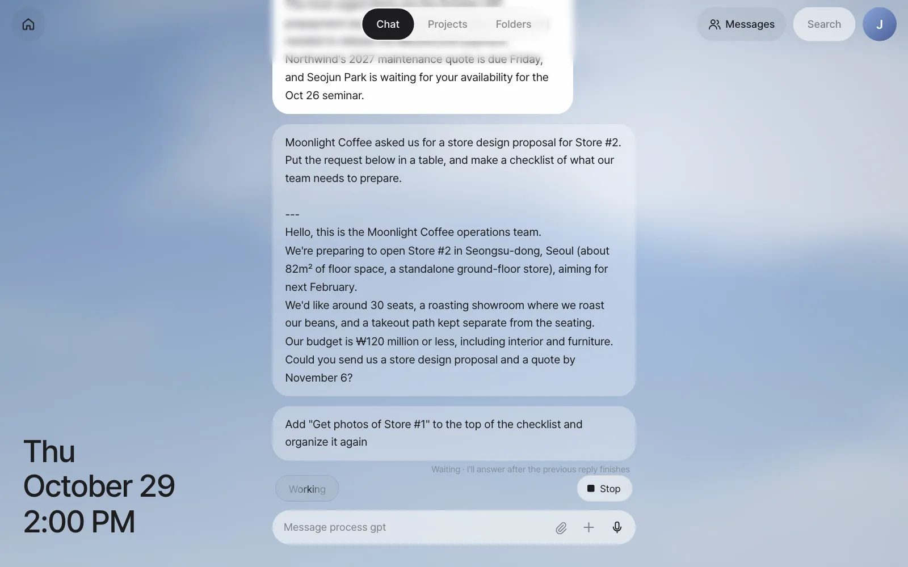
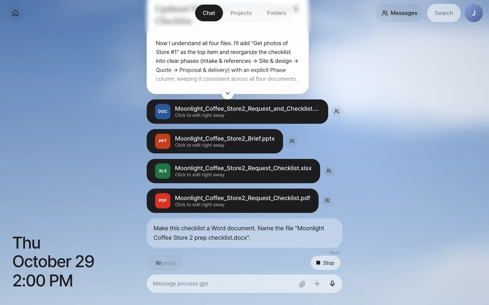

Paste Moonlight Coffee's Store #2 design request into the assistant, get back a request summary table and a preparation checklist, then have it turn them into a Word file. You'll learn what you see while the assistant works, which cards the answers come back as, what you can do while you wait, and how to stop an answer.
The situation in this chapter#
You've toured the screen, so now you hand over your first piece of work. On Monday afternoon, team lead Jinyoung Jang gets a request from the Moonlight Coffee operations team. They're opening Store #2 in Seongsu-dong, Seoul, and want a store design proposal and a quote by November 6. Before writing the proposal, Jinyoung wants to organize the request without missing anything, and work out what the team needs to prepare. Work like this is a good fit for the assistant.
What the assistant does#
What you send in the input box is first sorted by what kind of work it is. Most work (questions, organizing, writing documents, analysis) goes to Process GPT's AI agent. Work that needs a site login goes to the browser agent (Chapter 6), requests like "Every morning at 8…" go to scheduling (Chapter 11), and "Make me a panel" goes to panel apps (Chapter 12). The assistant decides where to send it, so you just ask in words.
The agent has a workspace of its own, so it doesn't only answer. It creates and edits files itself. The files it makes show up in the conversation as cards.
Try it 1 — request summary and checklist#
- Click the Home button to fold Home (the conversation gets wider).
- Paste the text below into the input box and click ↑ (Send). Press Shift+Enter for a new line and Enter to send.
Moonlight Coffee asked us for a store design proposal for Store #2. Put the request below in a table, and make a checklist of what our team needs to prepare.
---
Hello, this is the Moonlight Coffee operations team.
We're preparing to open Store #2 in Seongsu-dong, Seoul (about 82㎡ of floor space, a standalone ground-floor store), aiming for next February.
We'd like around 30 seats, a roasting showroom where we roast our beans, and a takeout path kept separate from the seating.
Our budget is ₩120 million or less, including interior and furniture.
Could you send us a store design proposal and a quote by November 6?
As soon as you send it, ··· Read appears under your message, and a status line such as "Thinking" or "Working" appears faintly at the left above the input box. On the right, Stop appears too, for stopping the answer (see "When you want to stop an answer" below). When the agent reads files, the status changes to what it's doing now, like "Looking at files," "Creating document" when it makes a document, or "Searching" when it searches the web.

In our run, this request took about 5 minutes. When the answer arrives, it looks like this.

Check: Above the answer there's a "↳ New topic · Moonlight Coffee asked us for a store de…" line, and below it a titled document card (in this run, "Moonlight Coffee Store Proposal Summary"). Inside the card, the customer, location, store format, floor area, seats, budget, opening target and deadline are organized in a table, followed by a checklist of 10 tasks, each with an owner (Sales, Designer, Finance) and a suggested due date. In our run, the agent also saved the summary as four files on its own — Word, PowerPoint, Excel and PDF — whose file cards appear under the answer, and the top of the card kept a few of its progress notes ("Now I'll create the documents…"). The title, the tasks and which files it makes differ every run.
Answers come in three shapes#
| Shape | When | How to read it |
|---|---|---|
| Speech bubble | Short answers | Just read it |
| Document card | Long answers that start with a heading (#) or have many lists |
Only the top part shows. Click ⌄ at the bottom to expand it |
| File card | When the agent made a file | Click it to open the editor (Try it 2 below) |
The "↳ …" line above an answer shows which conversation the answer belongs to. This was a new subject, so it started with "New topic." You'll see what this line means in detail in Chapter 4.
Try it 2 — get it as a Word file#
The summary is good, but you need a file to pass around to teammates. Keep going in the same conversation.
Make this checklist a Word document. Name the file "Moonlight Coffee Store 2 prep checklist.docx".
Just saying "this checklist" is enough. The assistant understands that this follows up on the Moonlight Coffee story right before it.

Check: There's a file card Moonlight Coffee Store 2 prep checklist.docx with a DOC icon, and it says "Click to edit right away." Click the card and the IeumOffice editor opens on screen. Editing directly in the editor, or keeping it open and asking in words like "Add a line about the lighting plan to the design direction," is covered in Chapter 7. The person-shaped button next to the card is the share button for sending it to teammates (Chapter 14).
How to ask well
- Give it the material. Paste the text your answer should be based on, like the original request email, and it organizes from that instead of making things up. Attach files with the 📎 button or by dragging and dropping (up to 50MB).
- Say what shape you want. Say "as a table," "as a checklist," or "as a Word file named …," and that's the shape you get. Hangul (hwpx), Excel (xlsx) and PowerPoint (pptx) work too.
- Don't try to do it all at once. Splitting it up, like organize → check → make a file, makes it easier to correct course along the way.
- Click the 🎙 button in the input box to dictate by voice.
While you wait#
Long work takes a few minutes. Here's what you can and can't do in the meantime.
- You can step away. The work runs on the server, not in your browser. Send the request from Try it 1 and then reload the page. The "Working" status line is still there, and the answer arrives shortly after. Even if you close the tab and open it later, the answer stays in the conversation.
- You can look at other screens. The work goes on while you look at Home cards or open Settings.
- You can keep sending. If you send another message on the same story while waiting for an answer, "Waiting · I'll answer after the previous reply finishes" appears under that message. The previous answer isn't cut off and arrives in full, then the answer to the new message comes. Messages on other topics don't wait and run side by side (Chapter 4).
- If there's no word for a long time, the assistant stops waiting. If the agent doesn't respond for 15 minutes, you get "The agent didn't respond for a while, so I stopped waiting. Please send the same request again." When that happens, send the same request again.


When you want to stop an answer#
While the assistant is writing an answer, Stop appears at the top right of the input box. If you asked for the wrong thing, click this button. It stops the work on the server too, and "(Stopped the answer.)" is left in the chat. Intermediate files the stopped answer was writing (scripts and the like) don't show up as cards. Then say it again with your correction, like "No, rewrite only the Site & design part of the checklist." It continues as a follow-up in the same conversation, so you don't need to explain the earlier content again.

Next#
So far you've only talked about Moonlight Coffee. In the next chapter, you mix a completely different topic into the same chat and watch the assistant split the conversation by working out, for each message, which story it follows up on (Chapter 4).
Check questions
- Continue in the same conversation and send
Add "Get photos of Store #1" to the top of the checklist and organize it again. Does the "↳" line above the answer say "New topic" or not? - What's the difference between an answer that comes as a speech bubble and one that comes as a document card?
- To show the Word file you made in this chapter to Seoyeon Park (finance), which button would you click? (Don't click it yet — you'll do it in Part 4.)
Answer
- "New topic" shouldn't appear. The Moonlight Coffee conversation title should show as it is. That means it was judged a follow-up of the earlier story (the number next to "routing model" is how confident that judgment is).
- Short answers come as speech bubbles. Long answers that start with a heading (
#) or have many lists come as titled document cards. A document card starts folded, and you expand it with ⌄. - The person-shaped share button on the right of the file card. It comes with a permission so only the recipient can open it, and the recipient edits their own copy (Chapter 14).